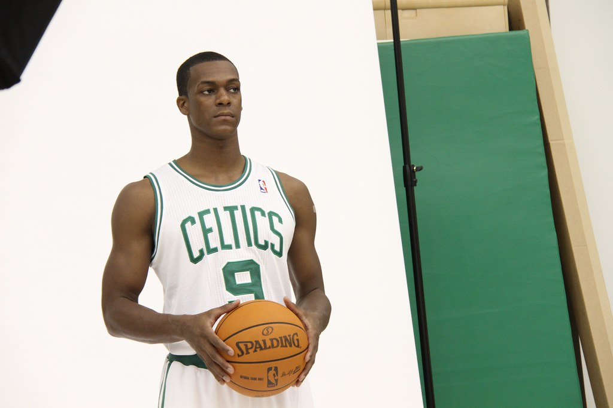
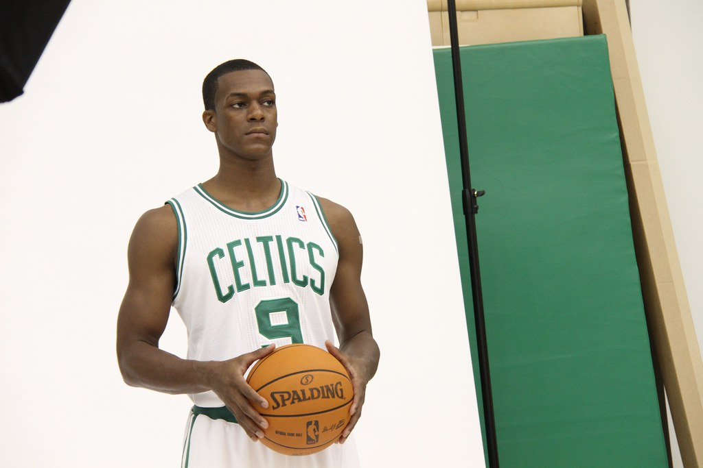

Coaches
Red Auerbach
1950-1966
Known as one of the most legendary coaches of all time, Red may not have been the first coach in Celtics history but he is very much the most notable and iconic coach in franchise history. Coaching 16 seasons for the Celtics, Red was a part of 9 NBA championships and served to represent a baseline of success for the franchise as it grew to what it is today.
Bill Russell
1966-1969
One of two player-coaches (the other Dave Cowens), Bill Russell proved a mastermind defensive coordinator and anchor. Through his 3 seasons, he won 162 games and won 2 NBA Championships, a feat that would never be replicated by a player-coach and likely never will as the tradition has grown out of the game today.
Tommy Heinsohn
1969-1978
After a successful NBA playing career with the team spanning 9 seasons, Heinsohn would go on to serve another 9 seasons as the Celtics head coach starting in 1969. Winning 427 out of his 690 games, Tommy’s teams reigned in two NBA championships during his tenure. After his coaching career, Heinsohn would become a color commentator for the Celtics all the way until 2020, marking 63 years as a part of the franchise.
Bill Fitch
1979-1983
Fitch coached in the NBA for 25 years, 4 of them being with the Celtics in the early 80s. This proved a great honor, as he would win 242 out of 328 games, the second best winning percentage in franchise history, an NBA title, and would later be named one of the 10 Greatest Coaches of All Time by the NBA.
KC Jones
1983-1988
Another all-time Celtic great that turned to coaching, Jones coached for 11 seasons in Boston, 5 of those being as a head coach. Boasting the best win% in franchise history along with two titles, Jones is one of the most decorated Celtics across his playing and coaching careers.
Doc Rivers
2005-2013
Doc Rivers took over in 2005 after a couple of unfulfilling playoff runs to start the 2000s. He would go on to coach for essentially a decade for the Celtics, notably being the coach behind the Celtics Big 3 and 2008 championship run. With the 2nd most games as a coach, Rivers made the playoffs in 6 of his 8 seasons, a great accomplishment in the modern age of basketball.
Brad Stevens
2013-2021
When Doc Rivers refused to coach a “rebuilding” team, Brad Stevens from Butler stepped up and turned a 25-win team into a perennial playoff appearance. Stevens is known for being one of the smartest head coaches of the modern era of basketball, specifically on the defensive end, and leading teams with subpar talent to unparalleled success. Despite never catching an NBA title, Stevens was crucial to turning around the Celtics organization in the mid-2010s and developing the current stars of the team before being promoted to President of Basketball Operations in 2021.
Joe Mazzulla
2022-Current
The current coach of the Celtics, Mazzulla had the luxury of inheriting a great team and improving them to elite. Winning 97 of his 134 games at the time of this writing, Mazzulla is continuing to prove that his success as a coach is deserved and is looking to maintain his culture of winning as the Celtics fight for an elusive championship.
Accolades (Franchise Rank)
1,192 Games (1st) | 66.7 Win% (4th) | 9 NBA Championships (1st)
245 Games (8th) | 66.1 Win% (5th) | 2 NBA Championships (2nd)
690 Games (3rd) | 61.9 Win% (7th) | 2 NBA Championships (2nd)
328 Games (7th) | 73.8 Win% (2nd) | 1 NBA Championship (5th)
410 Games (6th) | 75.1 Win% (1st) | 2 NBA Championships (2nd)
721 Games (2nd) | 57.7 Win% (8th) | 1 NBA Championship (5th)
630 Games (4th) | 55.6 Win% (10th) | 38 Playoff Wins (5th)
134 Games (13th) | 72.4 Win% (3rd) | 120.1 Offensive RTG (1st)
Players
 


Bob Cousy
1950-1963
One of two player-coaches (the other Dave Cowens), Bill Russell proved a mastermind defensive coordinator and anchor. Through his 3 seasons, he won 162 games and won 2 NBA Championships, a feat that would never be replicated by a player-coach and likely never will as the tradition has grown out of the game today.
Bill Russell
1966-1969
One of two player-coaches (the other Dave Cowens), Bill Russell proved a mastermind defensive coordinator and anchor. Through his 3 seasons, he won 162 games and won 2 NBA Championships, a feat that would never be replicated by a player-coach and likely never will as the tradition has grown out of the game today.
Tommy Heinsohn
1957-1965
One of two player-coaches (the other Dave Cowens), Bill Russell proved a mastermind defensive coordinator and anchor. Through his 3 seasons, he won 162 games and won 2 NBA Championships, a feat that would never be replicated by a player-coach and likely never will as the tradition has grown out of the game today.
Sam Jones
1957-1969
One of two player-coaches (the other Dave Cowens), Bill Russell proved a mastermind defensive coordinator and anchor. Through his 3 seasons, he won 162 games and won 2 NBA Championships, a feat that would never be replicated by a player-coach and likely never will as the tradition has grown out of the game today.
John Havlicek
1962-1978
One of two player-coaches (the other Dave Cowens), Bill Russell proved a mastermind defensive coordinator and anchor. Through his 3 seasons, he won 162 games and won 2 NBA Championships, a feat that would never be replicated by a player-coach and likely never will as the tradition has grown out of the game today.
Robert Parish
1980-1994
One of two player-coaches (the other Dave Cowens), Bill Russell proved a mastermind defensive coordinator and anchor. Through his 3 seasons, he won 162 games and won 2 NBA Championships, a feat that would never be replicated by a player-coach and likely never will as the tradition has grown out of the game today.
Larry Bird
1979-1992
One of two player-coaches (the other Dave Cowens), Bill Russell proved a mastermind defensive coordinator and anchor. Through his 3 seasons, he won 162 games and won 2 NBA Championships, a feat that would never be replicated by a player-coach and likely never will as the tradition has grown out of the game today.
Kevin McHale
1981-1993
One of two player-coaches (the other Dave Cowens), Bill Russell proved a mastermind defensive coordinator and anchor. Through his 3 seasons, he won 162 games and won 2 NBA Championships, a feat that would never be replicated by a player-coach and likely never will as the tradition has grown out of the game today.
Paul Pierce
1998-2013
One of two player-coaches (the other Dave Cowens), Bill Russell proved a mastermind defensive coordinator and anchor. Through his 3 seasons, he won 162 games and won 2 NBA Championships, a feat that would never be replicated by a player-coach and likely never will as the tradition has grown out of the game today.
Kevin Garnett
2007-2013
One of two player-coaches (the other Dave Cowens), Bill Russell proved a mastermind defensive coordinator and anchor. Through his 3 seasons, he won 162 games and won 2 NBA Championships, a feat that would never be replicated by a player-coach and likely never will as the tradition has grown out of the game today.
Rajon Rondo
2006-2015
One of two player-coaches (the other Dave Cowens), Bill Russell proved a mastermind defensive coordinator and anchor. Through his 3 seasons, he won 162 games and won 2 NBA Championships, a feat that would never be replicated by a player-coach and likely never will as the tradition has grown out of the game today.
Isaiah Thomas
2014-2017
One of two player-coaches (the other Dave Cowens), Bill Russell proved a mastermind defensive coordinator and anchor. Through his 3 seasons, he won 162 games and won 2 NBA Championships, a feat that would never be replicated by a player-coach and likely never will as the tradition has grown out of the game today.
Jayson Tatum
2017-Present
One of two player-coaches (the other Dave Cowens), Bill Russell proved a mastermind defensive coordinator and anchor. Through his 3 seasons, he won 162 games and won 2 NBA Championships, a feat that would never be replicated by a player-coach and likely never will as the tradition has grown out of the game today.
Accolades (Franchise Rank)
917 Games | 1x MVP | 13x All-Star (1st) | 10x All-NBA 1st Team (1st) | 6x Champion (8th)
963 Games (5th) | 12x All-Star (3rd) | 5x MVP | 3x All-NBA 1st Team (5th) | 1x All-Defensive 1st Team | 11x Champion (1st)
654 Games | 6x All-Star | 4x All-NBA 2nd Team | 8x Champion (3rd)
871 Games | 5x All Star | 3x All-NBA 2nd Team | 10x Champion (2nd)
1270 Games (1st) | 13x All-Star (1st)| 4x All-NBA 1st Team (3rd) | 5x All-Defensive 1st Team | 8x Champion (3rd)
1106 Games (2nd) | 9x All-Star (5th) | 1x All-NBA 2nd Team | 3x Champion
897 Games | 12x All-Star (3rd) | 3x MVP | 9x All-NBA 1st Team (2nd) | 3x Champ
971 Games (4th) | 7x All-Star | 2x 6MOY | 1x All-NBA 1st Team| 3x All-Defensive 1st Team | 3x Champion
1102 Games (3rd) | 10x All-Star (4th) | 1x All-NBA 2nd Team | 1x Champion
396 Games | 5x All-Star | 1x All-NBA 1st Team | 3x All-Defensive 1st Team | 1x DPOY | 1x Champion
527 Games | 4x All-Star | 1x All-NBA 3rd Team | 2x All-Defensive 1st Team | 1x Champion
179 Games | 2x All-Star | 1x All-NBA 2nd Team | 28.9 PPG Season (3rd)
488 Games | 5x All-Star | 3x All-NBA 1st Team (5th) | 30.1 PPG Season (1st)